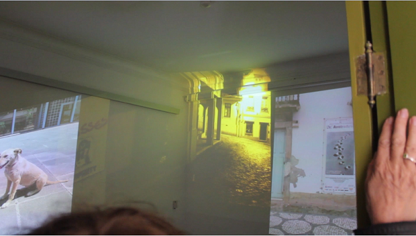
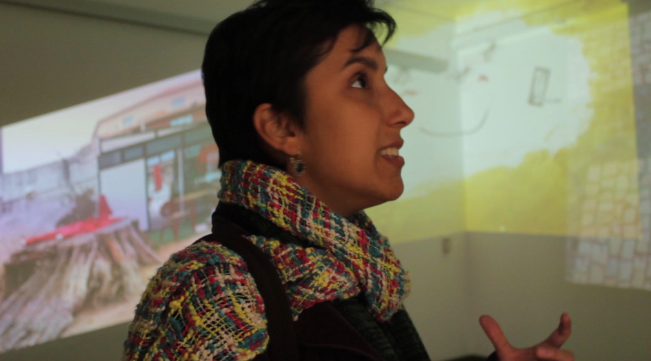

Silent Objects
Video+Participation
Installation resulting from an worskhop by Professor Pedro Almeida.
At the end of the workshop pictures taken by the participants are re-arranged to create an overlaping space and regrouping of images , producing a chain effect of the different views. Promoting a space for reflection and exchange of experiences between users.
The randomness in information transmission allows the association of images belonging to different participants promoting the exchange of different views and experiences. A new image is created from the contrast between overlapping images. The end result can be read as a reconstruction of several images in the development of a collective memory.


